Using SOLT for instance and semantic segmentation
In this tutorial, we will shortly demonstrate how to use SOLT in instance and semenatic segmentation tasks.
To run this notebook, please download train images from Kaggle Data Science Bowl’18 page, and place them into Data/ds_bowl_stage_1.
[2]:
%matplotlib inline
import numpy as np
import matplotlib.pyplot as plt
from matplotlib import patches
import cv2
import os
import glob
import json
np.random.seed(12345)
[3]:
import solt
import solt.transforms as slt
[36]:
def get_masks(img_fname):
img_id = img_fname.split(os.path.sep)[3]
masks_fnames = glob.glob(os.path.join('Data', 'ds_bowl_stage_1','stage1_train', img_id, 'masks', '*.png'))
masks = []
for msk_fname in masks_fnames:
masks.append(cv2.imread(msk_fname, 0))
return masks
def vis_img_instances(img, masks):
m = np.zeros((masks[0].shape), dtype=int)
for j, msk in enumerate(masks):
m[msk == 255]=(j+1)
fig = plt.figure(figsize=(6,6))
ax = fig.add_subplot(1,1,1)
ax.imshow(img)
ax.imshow(np.ma.masked_array(m, m==0), cmap='nipy_spectral', alpha=0.8)
plt.show()
Loading the data
[41]:
imgs_fnames = glob.glob(os.path.join('Data', 'ds_bowl_stage_1','stage1_train', '*', 'images', '*.png'))
fname = imgs_fnames[213]
masks = get_masks(fname)
img = cv2.imread(fname)
img = cv2.cvtColor(img, cv2.COLOR_BGR2RGB)
vis_img_instances(img, masks)
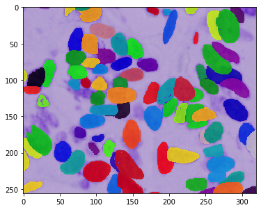
Defining a pipeline
In case if we want to augment every instance for such models as Mask-RCNN, we easily do it using a DataContainer
[45]:
stream = solt.Stream([
slt.Rotate(angle_range=(-90, 90), p=1, interpolation='bicubic'),
slt.Pad(200),
slt.Crop(200, crop_mode='c'),
slt.Crop(192, crop_mode='r')
])
print(stream.to_yaml())
stream:
interpolation: null
optimize_stack: false
padding: null
transforms:
- rotate:
angle_range:
- -90
- 90
ignore_state: true
interpolation:
- bicubic
- inherit
p: 1
padding:
- z
- inherit
- pad:
pad_to:
- 200
- 200
padding:
- z
- inherit
- crop:
crop_mode: c
- crop:
crop_mode: r
Augmentation results
In the example below, we use all the masks in the augmentation process because of the instance segmentation problem. Here, we will also demonstrate the power of the dict API:
[47]:
for i in range(10):
res_dc = stream({'image': img, 'masks': masks}, return_torch=False)
img_res = res_dc.data[0]
masks_res = res_dc.data[1:]
vis_img_instances(img_res, masks_res)
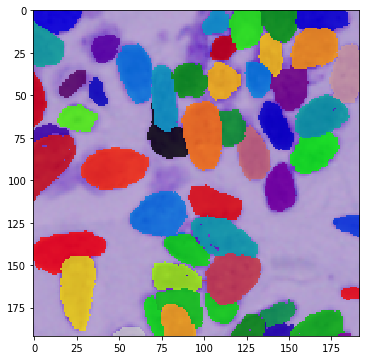
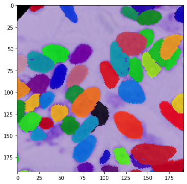
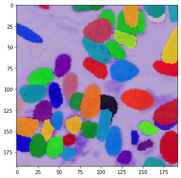
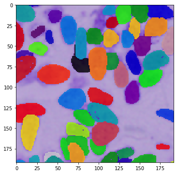
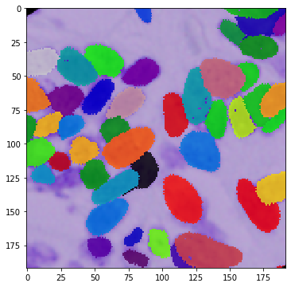
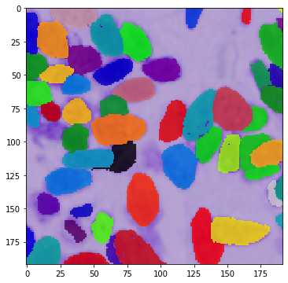
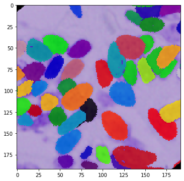
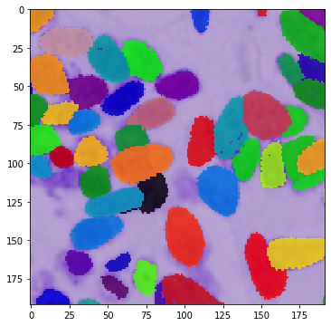
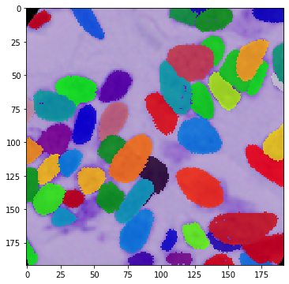
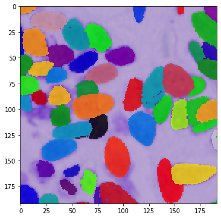
[ ]: